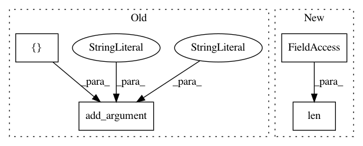

48543004aa6f3b2fdff408be58fad410597bfbaa,object-detection/yolov2/yolov2_nnp.py,,get_args,#,26
Before Change
p.add_argument("--thresh", type=float, default=.5)
p.add_argument("--nms", type=float, default=.45)
p.add_argument("--nms-per-class", type=bool, default=True)
p.add_argument(
"--biases", nargs="*",
default=[0.57273, 0.677385, 1.87446, 2.06253, 3.33843,
5.47434, 7.88282, 3.52778, 9.77052, 9.16828])
p.add_argument("--nnp", type=str, default="yolov2.nnp")
args = p.parse_args()
assert args.width % 32 == 0
assert args.height % 32 == 0
After Change
args = p.parse_args()
assert args.width % 32 == 0
assert args.height % 32 == 0
args.anchors = get_anchors_by_name_or_parse(args.anchors)
args.num_anchors = int(len(args.anchors) // 2)
args.anchors = np.array(args.anchors).reshape(-1, 2)
return args
In pattern: SUPERPATTERN
Frequency: 3
Non-data size: 4
Instances
Project Name: sony/nnabla-examples
Commit Name: 48543004aa6f3b2fdff408be58fad410597bfbaa
Time: 2018-10-26
Author: Takuya.Narihira@jp.sony.com
File Name: object-detection/yolov2/yolov2_nnp.py
Class Name:
Method Name: get_args
Project Name: sony/nnabla-examples
Commit Name: 48543004aa6f3b2fdff408be58fad410597bfbaa
Time: 2018-10-26
Author: Takuya.Narihira@jp.sony.com
File Name: object-detection/yolov2/yolov2_detection.py
Class Name:
Method Name: get_args
Project Name: batra-mlp-lab/visdial-challenge-starter-pytorch
Commit Name: 20b6e3e88cad2a2d80da778a2c991ecc4640f94d
Time: 2018-12-25
Author: karandesai281196@gmail.com
File Name: evaluate.py
Class Name:
Method Name: